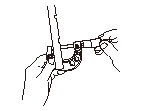
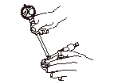
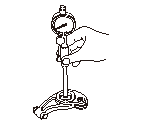

ロッカ アーム/シャフトのクリアランス点検
ロッカ シャフト ホルダAssy.を取外し
、
ロッカ アームAssy.を分解する。
ロッカ シャフトの外径を測定する。
ロッカ シャフトの測定は各ロッカ アームの摺動部分で行う。

シリンダ ゲージ（A）をロッカ シャフトの外径に合わせる。

ロッカ アームにシリンダ ゲージを挿入し、ロッカ アームとシャフトのクリアランスを点検する。
•
点検は全てのロッカ アームについて行う。
•
限度値以上の場合はロッカ アームを交換して再点検を行う。再点検時も限度値を越える場合はロッカ シャフトを交換する。
•
ロッカ アームを交換する際は、ロッカ アームAssy.をセットで交換する。
ロッカ アームとシャフトのクリアランス
限度値:
0.08mm
ロッカ アームAssy.を組付け
、
ロッカ シャフト ボルダAssy.を取付ける。

 ロッカ シャフトの測定は各ロッカ アームの摺動部分で行う。
ロッカ シャフトの測定は各ロッカ アームの摺動部分で行う。